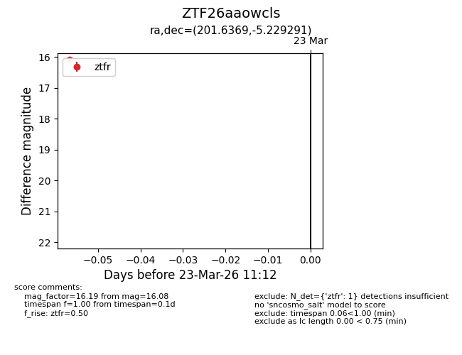
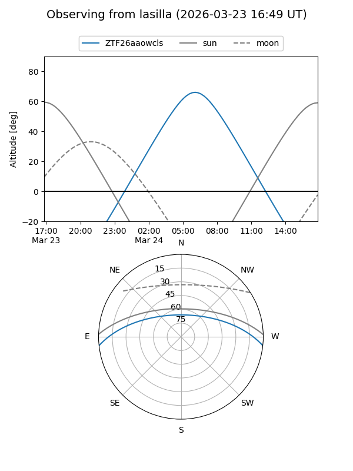
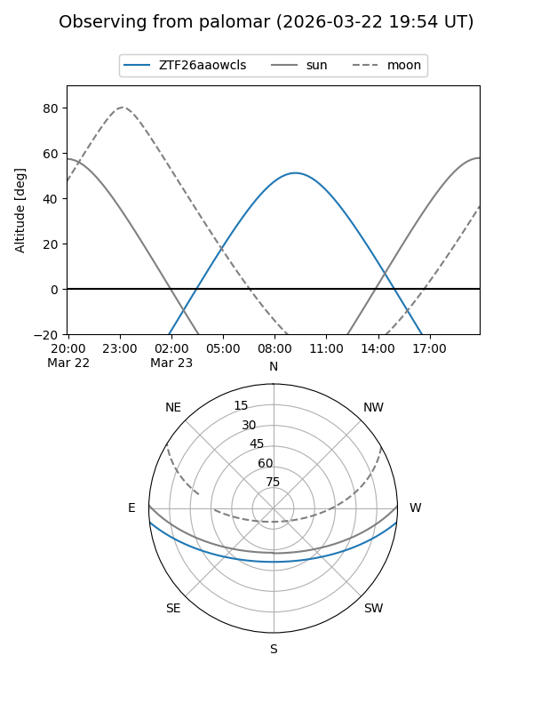

ZTF26aaowcls
Target ZTF26aaowcls at 2026-03-23 11:14
Aliases and brokers:
FINK: link
Lasair: link
ALeRCE: link
alt names
ZTF26aaowcls (ztf,fink_ztf)
Coordinates:
equatorial (ra, dec) = 201.6369,-5.22929
equatorial (HMS+DMS) = 13:26:32.85,-05:13:45.45
galactic (l, b) = (318.9339,+56.54771)
Flags:
Photometry:
last ztfr=16.08
1 ztfr detections
Lightcurve

Visibility


Additional plots